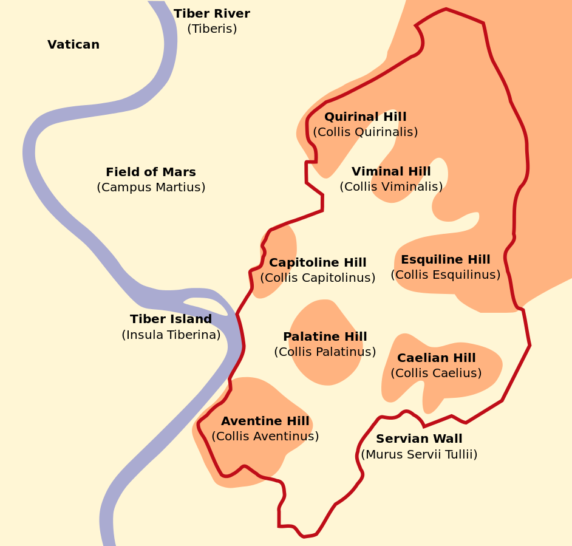
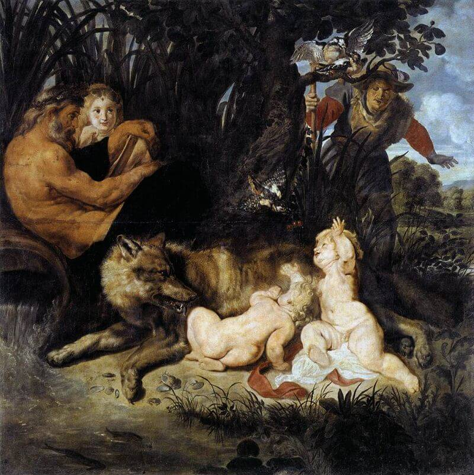
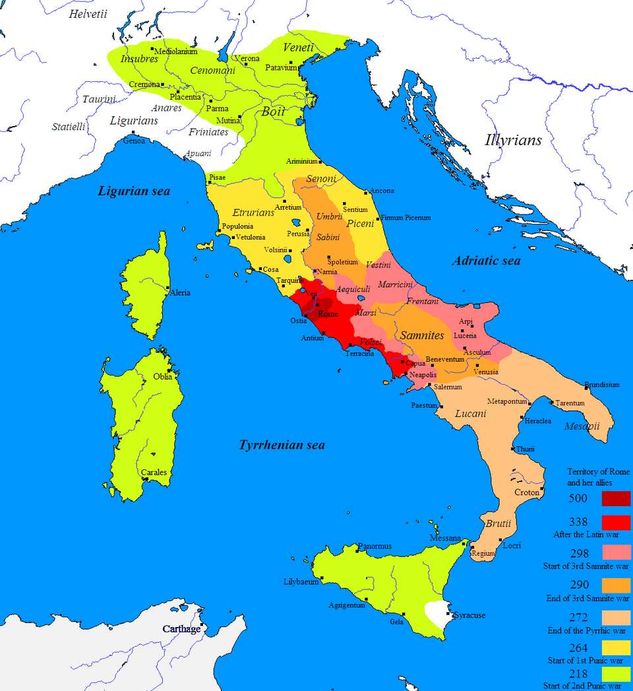
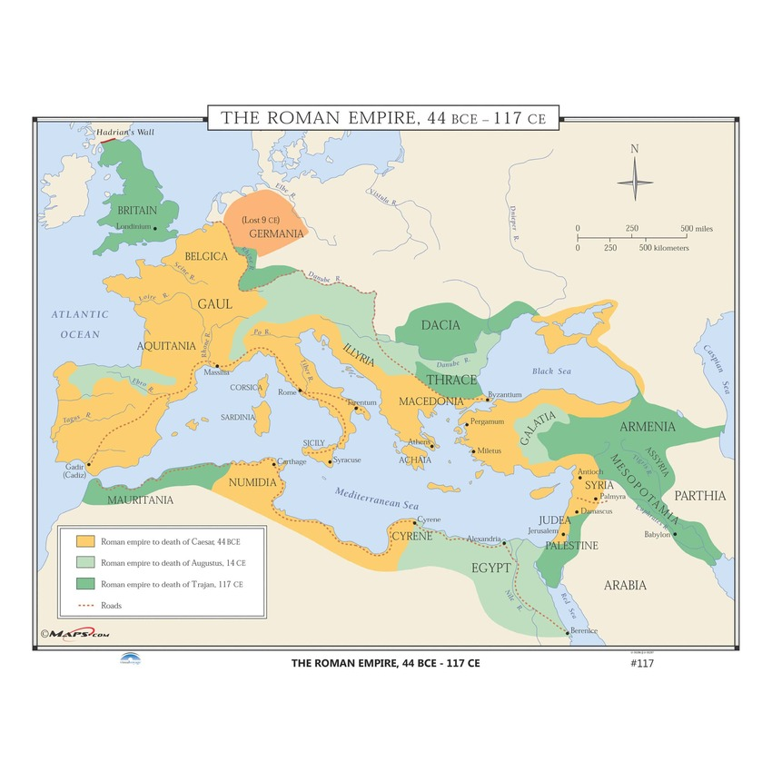
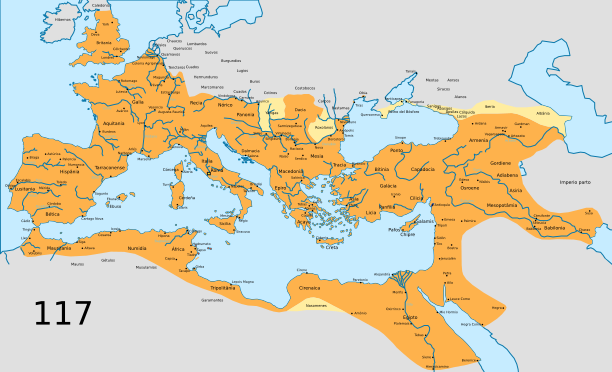

Rome was founded in the eighth century BCE by a Latin-speaking people who lived on the Tiber river. Its location, spread over seven hills, was strategically advantageous and greatly facilitated Rome's rise. Far from Near Eastern civilizations, surrounded by water and the Alps, it was not an easy target for invasions from other peoples. In addition, it was in close proximity to the rest of the Italian peninsula due to its central location. The climate was favorable, and they were situated geographically such that seaborne trade was naturally accessible.

The seven hills of Rome
Rome's founding myth tells the story of Romulus and Remus, offspring of the war god Mars and Rhea Silvia, daughter of the former king of Alba Longa, Numitor. The king and brother of Numitor, Amulius, saw the twins as a potential threat to his rule and ordered their murder. Their mother subsequently abandoned them at the river Tiber, where they were saved by the god Tiberinus and cared for by others in the future city of Rome. One notable tale tells that Romulus and Remus were nursed by a wolf in the cave, Lupercal. Eventually being adopted, unwaware of their identities as gods, they naturally rose to leadership.
Later, Remus was imprisoned in Alba Longa as a result of a political dispute. Romulus set out to free his brother and, in the process, Romulus and Remus learned the truth of their identities. They set out to found a city of their own. Returning to the site of what would become Rome, they reached a disagreement about which hill on which to build their city, and decided to settle the matter with a contest. Romulus claimed to have won the contest, which Remus disputed; Remus insulted Romulus, and Romulus responded by killing him. Romulus then went on to found the city of Rome, ruling as its first king.

Romulus and Remus by Peter Paul Rubens, 1615
The rape of the Sabines, another myth about early Rome, relates an explanation of Rome's growth from a village to a large power. Romulus, wanting to increase Rome's population in order to build an army, asked neighboring societies for permission to marry their women. Turned down and mocked, Romulus invited the neighboring Sabines to a festival, employing his men to kidnap the women. The Sabine men responded by attacking Rome to rescue their women, but the women rushed out and begged the men to stop fighting. The men came to an agreement and merged their populations under the aegis of Rome.
Roman civilization lasted for centuries, much longer than Greece. Roman culture was greatly influenced by the earlier Greek civilization as well as that of their neighbors.
Roman history after the early kingship is divided into the period of the Republic and that of the Empire. Under the belief that they were favored by their gods, the Roman Republic eventually came to expand to cover vast territories.
The period of the monarchy lasted from the eigth to the sixth century BCE. The monarchy was overthrown by Roman elites to form the republic after a string of violent kings held power. These wealthy Romans organized government as a republic, with power distributed among an electorate and an assembly of voters. The Roman Republic absorbed other peoples and their land through warfare.
From 753 to 509 BCE, Rome was ruled by a series of kings. These kings established the Senate, a government body consisting of a council to advise the king. The Senate would come to play an important role in the republic. Rome grew by absorbing other people and slaves obtaining freedom from their masters. Freed slaves would owe obligations to their former owners, but enjoy the benefits of limited citizenship; their offspring would possess full citizenship.
Rome initially controlled a small territory in central Italy that would greatly expand through conquest. During this time, the Romans were skilled in metallurgy. They both admired and resenting their Greek neighbors, who exterted a great degree of influence on their culture. The Etruscans to the north would also extert considerable influence, introducing their musical instruments, religious rituals, and the practice of divination.
The Roman elite came to despise the monarchy, enabling the development of the republic. In 509 BCE, the king's son raped a Roman woman named Lucretia, who committed suicide; the social elite then overthrew the monarchy in response. Roman society came to be divided into two orders, the elite patricians and the lower plebeians. The struggle between the patricians and plebeians was resolved in 287 BCE when the plebeians gained their own assembly and could pass laws.
The patricians, represented by only around 10% of the population, used their inherited status to exercise control over Roman religion and political office. The plebeians, in particular the wealthier among them, resented the power of the patricians, and especially disliked prohibitions on intermarriage between the orders. To extert pressure on the patricians, the plebeians would protest by refusing military service, a tactic which eventually resulted in the earliest Roman code of law. This law, called the Twelve Tables, granted greater political representation and possibilities for social mobility to the plebeians. The plebeians could now pass laws in their own assembly without the approval of the Senate, which was dominated by the patricians. In order to become a senator, a man had to achieve at least the office of quaestor.
The highest polical office in the Republic was that of the consul, with two elected every year. To become a consul, men had to climb a ladder of offices prior. First, he had to serve for ten years in the military. He then had to be elected quaestor, a kind of financial administrator. Next was the role of aedeile, who supervised streets, sewers, aqueducts, temples and markets. Next was praetor, which involved important judicial and military affairs. The best pratetors would then compete for election to consul. Praetors and consuls held imperium, a right to command and punish, as well as serving as generals in the army.
In 367 BCE, the plebeians passed a law that mandated one consul be picked among the plebeians. From 400 to 450 BCE, a violent struggle between the patricians and plebeians resulted in the creation of the plebeian tribunes, a body consisting of ten annually chosen officials ensuring the protection of the plebeians. This office was outside the ladder system.
Only wealthy men could serve in government positions, as the positions were not paid and officials were expected to use their own funds on public service. As such, men were driven by earning respect and glory.
Three assemblies were involved in enacting legislation and other judicial functions: The Centuriate Assembly, which eletected praetors and consuls; The Plebeian Assembly, which elected the tribunes; and the Tribal Assembly, the most important assembly in Rome, representing plebeians and patricians equally.
In the early Republic, praetors had the most authority in deciding legal matters. Eventually, a separate jury system emerged.
Driven by fear of external enemies and the desire for wealth, Romans waged war from the fifth to the third century BCE, leading to outward expansion and solidification of supreme power on the peninsula. The commitment to constant war decided the direction of Roman culture; contact with foreign peoples spurred the development of Roman literature and art, and service in distant lands undermined earlier Roman stability, as did relocation of the citizenry and importing prisoners of war to serve as slave labor.
From the 460s BCE, Romans spent a hundred years fighting with the Etruscans; victory in 396 BCE doubled their territory. Innovations in military technology, in particular the surpassing of the Greek phalanx, assisted their conquests. The phalanx was succeeded by a more flexible battle line and the technique of throwing javelins from behind large shields, only to run in and finish off competitors with swords. The Gauls sacked Rome in 387 BCE, forever leaving a fear of invaders imprinted on the minds of the Romans.

Roman expansion on the Italian peninsula
By 220 BCE, Rome controlled all of the Italian peninsula beneath the Po River. The Romans alternated between brutality and diplomacy in governing conquered peoples; sometimes they enslaved their subjects, other times offering peace in exchange for their enscription in the Roman army. To increase security, the Romans built a system of roads that spanned the Empire, which promoted the development of a unified Roman culture and the use of Latin as a lingua franca. Rome's wealth drew immigration, and the wealthy patricians and plebeians of Rome benefited greatly from war spoils and agriculture.
The three Punic Wars were fought against Carthage, a wealthy Phoenecian colony in Northern Africa that controlled maritime trade.
The first Punic War was a conflict over the control of Sicily. Rome was successful in this war, as in subsequent wars, due to their large manpower reserves and determination to win at any cost. This conflict spurred Rome to develop its naval power, a necessity considering the strength of the Carthaginian navy. This war resulted in Roman control of Sicily, an asset so profitable that it enabled the rapid acquisition of Sardinia and Corsica, where they established another province. This success ennobled the Romans to continue expansion. Fearing Carthage, the Romans developed alliances with the peoples of Spain.
The second Punic war was inaugurated when the Carthaginians decided to strike back at Rome: under the general Hannibal, the Carthaginians marched over the Alps into Italy. Thirty thousand Romans were killed at the bloody battle of Cannae. The Romans refused to desert, despite Hannibal's encouragement. Due to the Carthaginian alliance with Macedonia, the Romans were forced to fight on a second front in Greece, still not deterred from battle. The Romans invaded Carthage at the battle of Zama, where they claimed victory. Carthage was forced to hand over its holdings in Spanish territory, pay substantial compensation to Rome and evacuate its navy.
The third and final Punic war began with the Carthaginians reacting against the provocations of the Roman ally Numidia. The Romans won this conflict and proceeded to destroy Carthage and turn it into a Roman province. This resulted in a unique synthesis of Roman and Carthanginian culture in North Africa.
The net result of the Punic Wars was to extend Roman domination to North Africa, Spain, Greece, Macedonia and the western portion of Asia Minor. The Romans turned Greece and Macedonia into client state and frequently intervened to assert their power. In 133 BCE, the king of Pergamum in Asia Minor granted his kingdom to the Romans as a gift. The Romans also captured part of Gaul, making it into a province. By the late first century BCE, Rome ruled most of the Mediterranean.
The conquest of the Greek world led to Greek culture leaving a substantial imprint on Roman literature, philosophy and art. Many early Latian authors came from conquered territories rather than being native Romans, and the Greek influence was prominent. The earliest poetry in Latin was a translation of Homer's Odyssey, written by a formerly enslaved Greek. The first Roman historian wrote of Rome's founding and the Punic wars in Greek.
In the second century BCE, Cato wrote a history of Rome entitled THe Origins, beginning the tradition of Latin prose writing. While showing Greek influence and inspiration, early Roman literature celebrated Roman values.
In the first century BCE, the politician Cicero wrote on a wide variety of topics, ranging from political science to philosophy to science. Cicero applied Greek philosophy to the problems of Roman life.
Rome's architecture and art similarly reflected Greek influence.
Long depolyments away from home greatly impacted agriculture, the foundation of the Roman economy. A farmer away at war relied upon slaves or his wife to get his work done, ruining many small farmers. Wealthier Romans bought up farmland and used slaves to work huge farms known as latifundia, increasing the danger of slave revolts as the size of this population increased. An increase in the amount of young people contributed to the economic crisis. At the same time, many homeless and destitute people relocated to Rome. To avoid riots, the Roman government had to import grain to feed the poor. The demand for food was a divisive political issue. Meanwhile, the wealthier Romans were benefitting from imperialism abroad, having opportunities to increase their wealth through war, increasing class division.
In the late second century BCE, the Roman elite was bitterly divided over the question of poorer Romans. The Gracchus brothers, Tiberius and Gaius, were brutally murdered for pursuing a policy of land reform. When Gaius Marius opened the military to poor citizens to win support, he undermined the commitment to the pursuit of the common good. Romans were unwilling to share citizenship with Italian allies, sparking a war in Italy. The destruction of the republic was completed during the period of competition between Sulla, Pompey, and Julius Caesar.
Tiberius and Gaius Gracchus pushed for land reform, goading the rich into ceding lands for the stability of the Roman state. Many wealthier Romans resented this and, when Tiberius was made tribune in 133 BCE, he bypassed the Senate and gave the issue of land reform to the Plebeian Assembly, resulting in his death at the hands of a mob of elite citizens after he announced, additionally, to run as tribune again despite prohibition of consecutive terms of service.
Gaius, who was elected in 123 BCE, continued to push reforms, including subsidized grain prices, more farming reforms, government-sponsored employment for the poor, and farming colonies for the landless. In addition, he advocated extending citizenship to wider groups of Italians and tried to create new courts for trying senators accused of corruption. These courts were to be staffed by wealthy businessmen reather than politcians. The Senate blocked Gaius and he threatened violence, leading to a mob pursuing his death; rather than surrender, he had a slave cut his throat.
Two political factions emerged in Rome: the populares, supporters of the people, and the optimates, who supported "the best."
Marius, a man from a family without any consuls, won popularity for his talents as a general. Demonstrating his skill in North Africa and then against the Germans, he was granted consulship six times, breaking all precedent. While never accepted by the optimates, he had the support of the people by the reforms he enacted in the military. Marius opened the ranks to the landless, granting them wages and land at the completion of their service. This move enabled a shift from the army's loyalty to the state to loyalty to a particular general. As the state decayed, power shifted to the client system; wealthy Romans built private armies and opposed the Senate, leading to civil war.
Lucius Cornelius Sulla, taking advantage of rebellions in Italy and Asia Minor by non-Romans, used his army to capture the Senate. These uprisings occurred because many Italians were barred from citizenship, and in particular, their elite wanted a share in Roman power. This resulted in the Social War of 91-87 BCE; 300,000 Italians died. Though Rome claimed victory, the Italians south of the Po were granted citizenship.
Sulla's role in the war secured his election to consul in 88 BCE. King Mithiridates of Pontus rebelled against Roman control, and the Romans were divided over whether to send Marius or Sulla. When Sulla was granted the command, Marius relied on plebiscite to wrest it from Sulla. Sulla then marched on Rome, killing his opponents after emerging victorious in the civil war. Sulla served as dictator until 80 BCE, empowering the optimates by giving senators exclusive power to decide legal cases concerning the Senate and forbidding tribunes from enacting legislation.
Intense conflict between the aristocrats Julius Caesar and Gnaeus Pompey sparked the civil war that ended the republic, bringing back the monarchy.
Pompey was a talented general, winning the support of various strata among the Roman people after his defeat of the pirates plaguing the Mediterranean. He defeated Mithridates in 66 BCE and annexed Syria in 64 BCE, ending the Seleucid kingdom.
In 60 BCE, Pompey formed the First Triumvirate with his two most bitter rivals, Crassus and Caesar, in opposition to the Senate. Crassus died in 53 BCE, upsetting this balance of power. In 59 BCE, Caesar offered Pompey his only daughter Julia's hand in marriage to cement their alliance.
Caesar's campaign in Gaul won the loyalty of his men. In 54 BCE, Julia died in childbirth, opening a rift between Caesar and Pompey. In 52 BCE, Caesar's enemies made Pompey sole consul after an outbreak of violence between Caesar and Pompey's supporters. When the Senate ordered Caesar to surrender, civil war erupted. Caesar marched on Rome and Pompey and the Senate fled for Greece. Caesar defeated Pompey at the battle of Pharsalus in 48 BCE, and Pompey fled to Egypt, where he was murdered.
Caesar invaded Egypt and restored Cleopatra VII's rule, going on to have an affair with her. Caesar won the war by 45 BCE and declared himself dictator without a term limit. Despite his claims that he was not a king, he effectively ruled as such. Caesar's reforms included debt cancellation, limiting the number of people entitled to subsidized grain, investment in public projects such as libraries, veteran's colonies at home and abroad and plans to rebuild Carthage and Corinth.
The optimates resented Caesar's domination, perceiving him as a traitor for his support of the masses. Some senators, led by the traitorous Brutus, ambushed Caesar and stabbed him to death in the Senate house on March 15, 44 BCE.

Rome, 44 BCE - 117 CE
The decline of the republic was a direct consequence of Roman expansion, turning the Roman state into a huge expanse of territory too vast for the government to manage. Learning from Caesar's mistakes, his adopted son Octavian ended a 17-year civil war by claiming to restore the republic while actually presiding over a hereditary monarchy. Taking on the name Augustus, Octavian's reforms inaugurated a period of peace known as the Pax Romana, lasting from around 27 BCE to 180 CE.
Octavian and his friend Mark Antony were the main actors in this war. Octavian marched on Rome and forced the Senate to grant him consulship. Mark Antony, Octavian and the general Lepidus then formed the Second Triumvirate; Octavian and Mark Antony forced out Lepidus, then fighting each other. Antony allied with Cleopatria VII, taking control of the east. Antony fell in love with Cleopatra, which Octavian used to his advantage: he claimed that Antony was to make a vassal out of Rome, handing them over to Egypt and demanded loyalty. Winning the battle of Actium, Octavian claimed victory in the civil war. Cleopatra and Antony fled to Egypt where they committed suicide.
Octavian, learning from the mistakes of Caesar, established a disguised form of one-man rule. Instead of openly declaring himself dictator, as Caesar had, he ruled from behind the facade of preserving the republic. He created the office of princeps, meaning 'first man,' to disguise his usurpation of total power; the office was supposed to be elected by the Senate, but in practice, it was an inherited position. Octavian, granted the title of Augustus (divinely favored), held near-absolute power through skillful manipulation of his public image, disguising his effective status as a king.
Augustus stabilized society by winning the loyalty of the army. He did this by professionalizing the service, providing retirement benefits and regular terms of service. In addition, he installed the praetorian guard, soldiers stationed inside of Rome to keep order and provide security for him and his cabinet.
The Roman Empire at this date was highly stratified.
Augustus appointed Tiberius as his successor, beginning the Julio-Claudian dynasty. Tiberius was an able military general who faithfully enacted the system designed by his predecessor, including management of his image as a just, generous ruler, continuing patronage of the army, and promoting the myth of the republic by granting the elite office while maintaining control. Tiberius was required to divorce his wife in order to marry his daughter, a marriage that proved very unhappy. Tiberius spent his last years in exile, making it difficult to select an appropriate successor.
Caligula, an unstable and unsuitable ruler, succeeded Tiberius. Caligula bankrupted the treasury and engaged in outlandish public behavior. He was murdered by the praetorian guard, which opened up debate about true restoration of the republic by the Senate. The praetorian guard insisted on an emperor in order to secure continuing patronage, making clear that the republic was never to be restored.
Caligula was succeeded by Claudius, another able general. After Claudius came Nero, who drained the treasury in order to construct a large palace. The palace was constructed on the ruins of a large fire, and rumors circulated that Nero had started the fire intentionally in order to build his palace. To fund this palace, he made false accusatons against senators in order to seize their property. Generals overthrew Nero and he committed suicide.
After Nero's death, four generals fought for succession rights. The victor, Vespasian, inaugurated the Flavian dynasty. Vespasian was succeeded by his two sons, first Titus who only ruled for two years before his death. He was succeeded by Domitan, who was murdered by his wife and court after murdering several prominent citizens.
Domitan was succeeded by five emperors who are remembered for bringing stability to Rome, inaugurating a political golden age. These five emperors were Nerva, Trajan, Hadrian, Antonius Pius and Marcus Aurelius. Trajan expanded Rome to the greatest size it reached in its long history.

The Roman Empire at its greatest extent under Trajan
Rome had previously prospered through conquest and territorial expansion, but now had to focus on securing its acquisitions over a vast expanse of territory. In addition, officers in the army had to be well-paid in order to maintain discipline. In order to manage this financial situation, an agricultural tax was implemented in the provinces. Tax collection was carried out by decurions, wealthy provincial officials. In exchange for social status and prestige, the decurions were expected to pay funding shortfalls out of their own pocket.
The extent of the Roman empire meant that the army was incredibly diverse, serving the cause of Romanization: Latin emerged as a lingua franca along with a common culture throughout the Empire. In a reciprocal fashion, two-way influence between local cultures and Roman cultures led to cultural fusion in the provinces.
Law was established on the basis of equity; a distinction was made between the letter and spirit of the law, ie, what the law said and what it meant.
Hierarchy became increasingly stratified along class lines, and judicial decisions were lighter for the wealthy than the poor. It was reasoned that this was fair because the wealthy had greater social duties.
Women were encouraged to have many children in order to maintain Rome's population. Roman citizens would face social judgment regarding their family size. This could to significant dangers to women's health.
Christianity began as a splinter movement from Judaism, following the teachings of the prophet Jesus. Influenced by the apocalypticism that grew out of Jewish oppression in the Seleucid Empire, Jesus preached the coming of a Messianic savior to redeem humanity from sin, once and for eternity. The followers of Jesus believed that he was the promised Messiah.
The earliest writings about the life of Jesus came to form the canon of the New Testament. The New Testament relates that the ministry of Jesus began with his baptism by the apostle John. Eventually, Jesus traveled to Jerusalem to preach, earning many followers.
Unrest in Judea caused Roman authorities to install a leader in the province. Some Jews during Jesus' life taught that Jews should cooparate with Roman rule and others taught resistance. The two leading sects, the Pharisees and the Sadducees, were afraid that Jesus wanted to usurp their power. Fearing a Jewish revolt, the Roman leader Pontius Pilate put Jesus to death.
Jesus' followers claimed that they had seen his resurrection in the tomb after three days, earning belief in his message from other Jews. Peter, the leader of the apostles, came to be called the first bishop of Rome.
An important event was the conversion of Paul of Tarsus who previously persecuted the Christians. After a vision that Paul viewed as a divine revelation, he himself became a follower of Jesus. Paul was instrumental in the spread of Christianity to the provinces and among the gentiles. He taught that gentile converts did not have to practice certain stipulations of Jewish law, such as circumcision or dietary restrictions, in order to practice Christianity. This caused unrest among Jews, leadning to Paul's execution.
The Jews revolted in 66 CE, leading Titus to destroy the Jerusalem temple. After this event, Christianity began to diverse from Judaism, becoming its own faith, and Jewish scripture was committed to writing.
Early Christians did not agree on the best way to follow Jesus. After his death, the imminent return of Jesus was expected; when this did not occur, Christianity reoriented itself towards indefinite survival. Because some Christians taught that they could not join the military because it would mandate participation in the imperial cult; this led to fears of disloyalty to the emperor and the perception that Christians were a threat to the Roman state. In addition, many Romans feared that Christians would anger the traditional pagan gods, bringing punishment upon Rome. This situation led to widespread persecution of Christians, who celebrated martyrdom, under the belief that they would immediately attain heaven after dying for their faith.
Doctrinal disagreements led to the formation of a hierarchy of bishops to enact orthodoxy and manage the geographically distributed and growing church. One consequence of this process was the exclusion of women from leadership positions. Many women committed to celibacy to show their devotion to Jesus, earning them freedom from Roman cultural expectations and a measure of independence they could not otherwise attain.
Polytheism remained the dominant religious belief system in Rome even three centuries after the death of Jesus. Roman citizens dedicated themselves to cults of particular gods, such as Isis or Demeter, who expected citizens to lead an upright life.
Also popular, particualrly among the upper strata, were Greek philosophical ideas, and Stoicism in particular. Plotinus began the development of Neoplatonism, influenced by Greek and Persian ideas. This philosophy had a great effect on the development of Christianity and, in particular, Trinitarian doctrine and ascetic ideals.
In the third century, military expenditures provoked an economic crisis, caused by increased defense spending to keep out northern invaders. Unable to pay the defense budget, generals fought amongst each other in a lengthy civil war, ending the Pax Romana.
Northern invaders were particularly troublesome throughout all of Rome's history, but in the third century CE, Rome faced a crisis when the Sassanids defeated the Parthian Empire and aspired to restore the Persian Empire. In order to keep the Sassanids at bay, Rome had to move troops off of its northern border. This encouraged the northerners further. Rome, since the first century, had been enlisting these northern invaders as auxiliary soldiers in the Roman army in order to curb invasions. This policy helped expand the army beyond what Rome could afford, factoring into the crisis.
As a result, Rome suffered from inflation. Desperate emporers debased the coinage, causing merchants to match prices to value, which led to more inflation. Evenetually, the financial arrangement collapsed.
Emeperor Severus was a model soldier who came to power in the late second century CE. He and his son Caracella, his successor, drained the treasury to fuel their imperial ambitions and build elaborate architectural works. Soldiers were paid next to nothing at this time due to inflation; he raised their salaries significantly and, in order to pay, Caracella attempted to extend citizenship to all residents of the provinces excepting slaves. The idea was to use expanded citizenship to increase revenue from taxes. Ordinary citizens were squeezed beyond their limits and Rome was plunged into civil war, devastating the population and economic stability.
In addition, epidemics and earthquakes struck the provinces, decreasing the size of the army. Northern invaders took advantage of this crisis to conquer territory, which was only won back with difficulty. Needing a scapegoat, many polytheists blamed the Christians for angering the gods. This led to severe persecution under Decius; when persecuting Christians did not save Rome, the later emperor Gallineus declared that Christians be left alone and their property restored.
In order to support his large army, Diocletian imposed price and wage controls, reformed the tax system and restricted freedoms. Because keeping track of taxes meant knowing where people lived, he restricted movement. The army required large amounts of food and provisions, so he restricted freedom of choice in occupation, and made occupations hereditary. These reforms failed to curb inflation.
Seeing Christians as a threat to national security, Diocletian mandated their persecution, which was not enforced evenly across the four sections of the empire. Constantine put an end to this situation after having a dream that led to his conversion: he saw the Greek letters chi and rho, standing for Jesus Christ, on a shield that would lead him to victory in battle. Winning the battle, Constantine converted to Christianity. He passed the Edict of Milan, officially ending Christian persecution in the Empire.
Diocletian ended the third-century crisis by appointing four emperors. Suspicion of Christians remained amongst the majority of Romans, leading to Diocetian beginning another wave of persecution. Later, the emperor Constantine would convert to Christianity and end persecution. The stability Diocletian brought did not last long, and emperor Theodosius split the Empire into eastern and western halves. In the west, Christianized northern peoples settled amongst Romans, forming their own kingdoms. The eastern Empire would, however, last until being conquered by Turkish invaders in 1453.
Diocletian divided the Empire into four parts, each managed by a separate emperor, in a system known as the tetrarchy. Diocletian, and after, Constantine, ruled Rome as an autocracy. They reorganized the tax system in order to extract more revenue, reorganized the army, restricted the rights of citizens and increased their own authority. Taking inspiration from the Persians, the emperors put on elaborate displays of their incomparable supremacy. THe divide between wealthier and poorer Romans grew greater.
When Diocletian resigned, the remaining emperors fought a civil war, with Constatine emerging as the victor. When he died, he divided the Empire into three and left it to his three sons. This arrangement was not to last, and the Empire was ultimately divided into eastern and western halves, wnhich Theodosius made permanent later.
Christianization occurred gradually over time; Christianity was not declared the state religion until the fourth century, when Theodosius banned private funding for pagan sacrifices. Julian the Apostate was the last pagan emperor, a renegade from his family's Christian faith. Under Theodosius, most pagan temples were closed.
Judaism gradually became penalized, and Jews dispersed throughout the Empire. In the fifth century CE, the Palestinian and Babylonian Talmuds and the Midrash were written.
Christian social values emphasized community and care for the poor. Women could escape traditional expectations to raise a family by devoting themselves to celibacy in service of Christ. Nonetheless, they began to disappear from their early leadership roles as the hierarchy of bishops emerged and came to reflect the masculine world of Roman hierarchy.
Disputes about Christian doctrine raged during this time. In the second century, the heretic Arius, claimed that the Father and Son were not co-eternal and that the Son was inferior to the Father, being his creation. Constantine called the Council of Nicea, which produced the Nicene Creed and banished Arius to the balkans. Other heresies included monophysism, which emphasized Jesus' divine nature at the expense of his humanity. The Nestorian heresy claimed that Jesus had two natures, human and divine, instead of one. The Donatist controversy erupted when followers of the North African priest Donatus claimed that Christians who dabandoned their faith should not be readmitted to the church. The Council of Chalcedon in 451 was called to put an end to the Nestorian heresy, and resulted in a standardization of doctrine that mostr Christians alive still follow to this day.
Roman values included duty, loyalty, honor and status, the rule of law and communal decision-making. Guided by the mos maiorum, or "the way of the elders," Romans adhered to traditional values: suspicious of change, Romans preferred to stick to what was "tested by time."
Behaving virtuously earned the respect of other Romans. Virtus, or masculine virtue, involved ideas such as strength, loyalty, courage, wisdom and moral purity. Fides involved an absolute dedication to keeping one's obligations. For women, this meant maintaining virginity until marriage and monogamy after. For men, it meant keeping one's word and treating one justly, ie, in a manner befitting of what was owed to a particular person, which meant something different depending on their place in the Roman social hierarchy.
Roman discipline and the value of self-control meant strict regulation of emotional display, particularly in public.
The patron-client system was a hierarchical organization of social ties that involved obligation between people. A patrician would support someone of lower status financially, with the client then obligated to provide political support in exchange. These obligations were often inherited, spanning across generations.
The family was the nucleus of Roman society, ensuring the transmission of values and property across generations. The father possessed patria potestus, giving him ownership over all the property of his dependents and slaves. This was true even for adult children, who could not own property or accumulate wealth until their father's passing. While Roman women were under the guardianship of their fathers until their death, they enjoyed a relatively high degree of freedom after their fathers died. A Roman woman still needed a guardian, but this was largely a formality, with women managing their lives largely independently. The concept of female virtue centered around her role in forming her children's adoption of Roman values. Women could not vote or hold political office, but their influence was felt publicly, as they would influence men in private conversation. Women could own and acquire property and frequently engaged in business.
Education served the purpose of inculcating traditional Roman values, with rhetorical training being particularly important. Children were usually taught at home, and wealthy women were educated in literature in music in preparation to teach their children.
Romans adapted Greek religion for their own use; for example, Jupiter was the Roman form of the Greek god, Zeus. Also important were Juno (Hera) and Minerva (Athena), and all three together formed the central gods of the state religion. The role of the gods was to enable Roman prosperity by giving good harvests or victory in war, for example. Religion was an essential component of family life, with each home maintaining small shrines. Ritual was incorporated into daily activities. Roman gods often personified important values, such as piety.